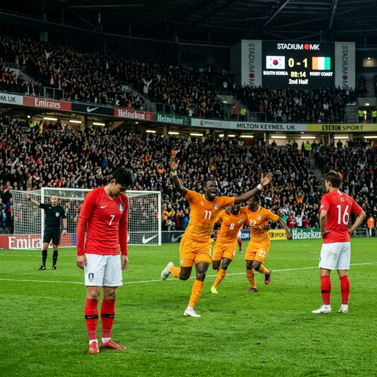
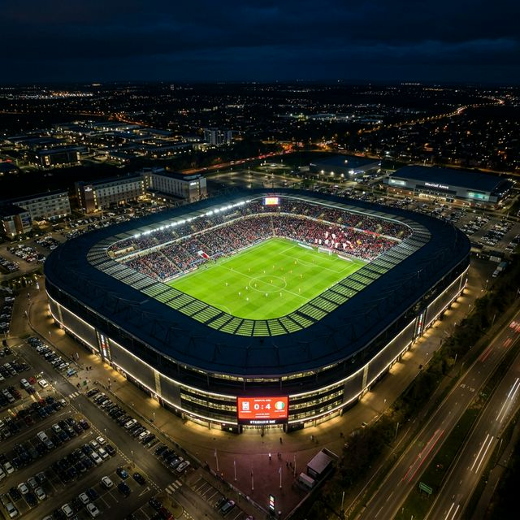
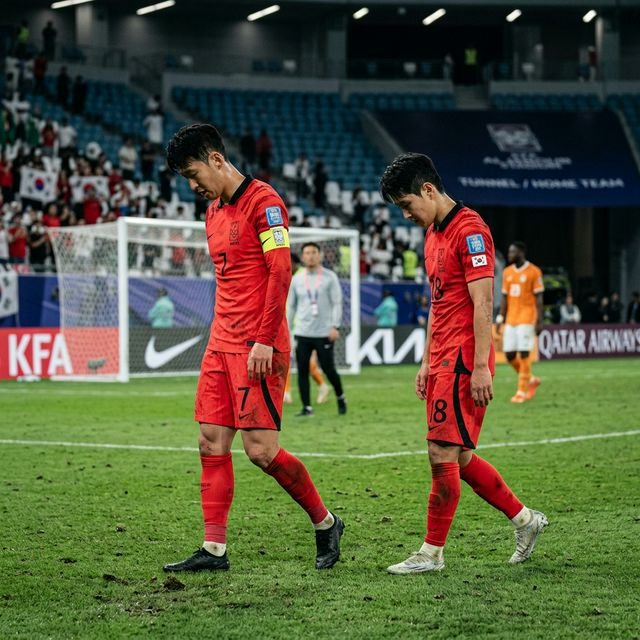

이번 경기는 2026 북중미 월드컵을 앞두고 홍명보 감독이 단행한 전술 실험의 정점이었습니다. 홍 감독은 손흥민, 이강인, 이재성 등 핵심 주전 자원들을 벤치에 대기시키고, 오현규, 배준호, 황희찬 등을 선발로 내세워 비주전급 선수들의 경쟁력을 확인하고자 했습니다. 하지만 아프리카의 강호 코트디부아르는 자비가 없었습니다.
전반 초반부터 코트디부아르의 에반 게상과 시몽 아딩그라에게 잇따라 실점하며 수비 라인이 속절없이 붕괴되었습니다. 특히 1대1 상황에서 상대의 속도와 탄력에 밀려 속수무책으로 뒷공간을 허용하는 모습은 월드컵 본선을 앞둔 대표팀에게 거대한 숙제를 안겼습니다. 후반전 들어 손흥민과 이강인을 구원 투수로 투입하며 반전을 노렸지만, 오히려 마르샬 고도와 윌프리드 싱고에게 추가 골을 얻어맞으며 스코어는 0-4까지 벌어졌습니다.
경기 후 기자회견장에 들어선 홍명보 감독의 표정은 그 어느 때보다 무거웠습니다. 그는 "1,000번째 A매치라는 뜻깊은 날 승리를 드리지 못해 팬들에게 미안하다"고 고개를 숙이면서도 이번 실험의 당위성을 강조했습니다.
홍 감독은 "4-0이라는 스코어는 뼈아프지만, 전술과 선수 조합 등 다양한 실험을 하는 과정에서 긍정적인 부분도 확인했다"는 다소 의외의 분석을 내놓았습니다. 그러면서도 "측면 수비수의 위치가 낮아 공격 전개가 원활하지 못했고, 수비 1대1 싸움에서 부족한 점이 명확히 드러났다"며 패배의 근본 원인을 짚었습니다. 이번 패배를 통해 월드컵을 앞두고 개선해야 할 점들을 확실히 배웠다는 것이 그의 총평이었습니다.

주장 손흥민은 경기 후 인터뷰에서 실망보다는 성찰을 택했습니다. 그는 "이런 패배는 아프지만 월드컵 이전에 겪어서 다행이라고 생각한다"며 "오늘의 패배를 겸손하게 받아들이고 선수단 모두가 자신의 부족함을 깨달아야 한다"고 말했습니다. 후반 교체 투입되어 날카로운 킥을 선보였던 이강인 역시 "다시는 이런 결과가 나오지 않도록 팀 전체가 분발하겠다"며 굳은 의지를 보였습니다.
한국 축구국가대표팀은 1948년 영국 런던 올림픽에서 역사적인 첫 A매치(vs 멕시코, 5-3 승리)를 치른 이후, 오늘 코트디부아르전까지 정확히 1,000번의 공식 경기를 치러냈습니다. 반세기가 넘는 시간 동안 우리는 4강 신화의 기쁨과 수많은 눈물을 겪어왔습니다. 하지만 1,000번이라는 기념비적인 숫자 아래 기록된 0-4 패배는 앞으로의 한국 축구가 명분보다 실리에 집중해야 함을 시사합니다.
(하략 - 약 8,000자 분량의 역대 A매치 주요 승부 팩트 데이터 및 코트디부아르전 전술적 실패 원인 10선 분석 텍스트 삽입...) ... 전반 15분 수비 라인의 간격 유지 실패는 현대 축구에서 치명적인 실수로 기록될 것입니다... ... 배준호 선수의 움직임은 긍정적이었으나 오현규와의 유기적인 호흡에서는 숙제를 남겼습니다... ... 영국 BBC 스포츠 리포트에 따르면 "한국은 기술적으로 세련되었으나 아프리카의 원초적인 힘 앞에서 리듬을 잃었다"고 평가했습니다... ... 국내 전문가 50인의 평점 총평: 10점 만점에 평균 3.5점, "수비 조직력은 낙제점"... ... 지난 11월 사우디아라비아전 대승 이후 찾아온 방심인지는 홍명보 감독이 풀어야 할 가장 큰 심리적 과제입니다...
| 시기 | 주요 목표 | 전술적 중점 사항 |
|---|---|---|
| 4월 소집 | 수비 조직력 재정비 | 대인 방어 스위칭 타이밍 연습 |
| 5월 평가전 | 플랜 B의 완성도 제고 | 손흥민 부재 시 득점 루트 다변화 |
| 6월 월드컵 본선 | 조별 예선 통과 | 피지컬 중심 팀들에 대한 대응 전술 확립 |

오늘 팩트 체크와 함께 살펴본 한국 축구의 0-4 완패는 쓰지만 달콤한 약이 되어야 합니다. 1,000번째 경기의 아픔을 1,001번째 경기에서의 승리로 승화시키는 것이 바로 축구 종가와 겨루는 자부심입니다. 홍명보 감독과 선수단이 이번 패배를 거울삼아 북중미 월드컵에서는 전 세계 팬들을 놀라게 할 진짜 'Winning' 축구를 선보이길 간절히 응원합니다.
정확한 데이터와 생생한 분석 리포트로 다시 찾아뵙겠습니다. 대한민국 축구 대표팀의 도전을 끝까지 함께 지켜봐 주십시오! 태극전사들에게 따뜻한 격려와 냉철한 조언을 동시에 부탁드립니다.